What to take for PetWatch session detail. Not a Figma design.
Copy: three columns, pickup/drop in the middle, Cancel in Manage. Skip the cancel modal.
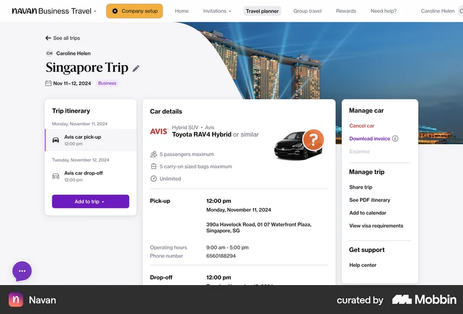
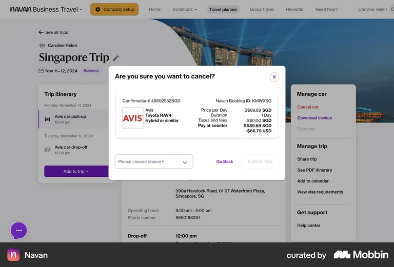
A visit/job is our session. Assigned person, dates, More actions. Skip Notes.
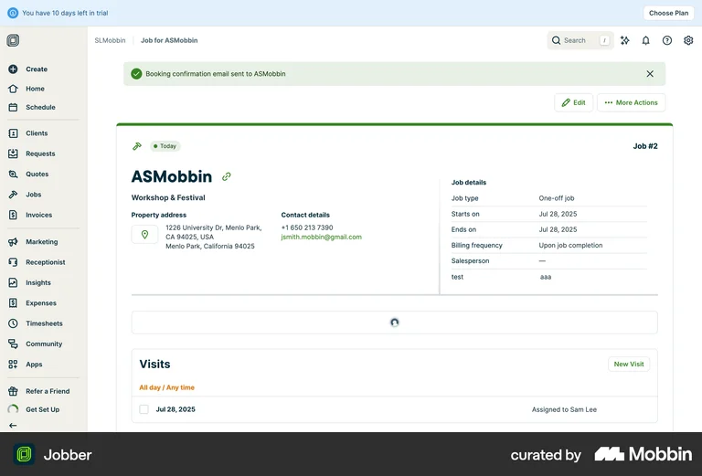
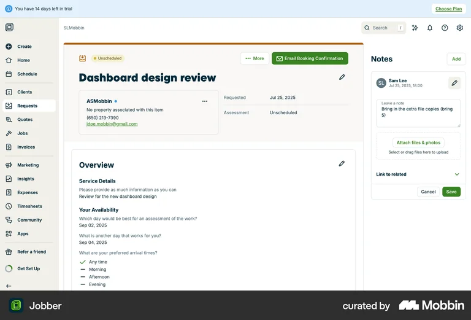
Green Starting at / red Ending at. Use that pair on the session page.
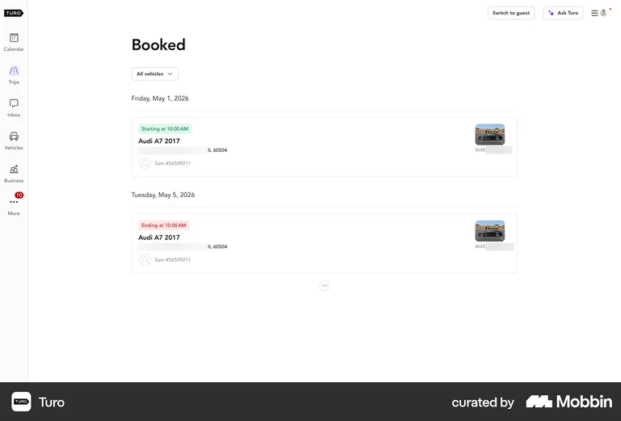
Full-page time + duration + manage list. Not a popup.
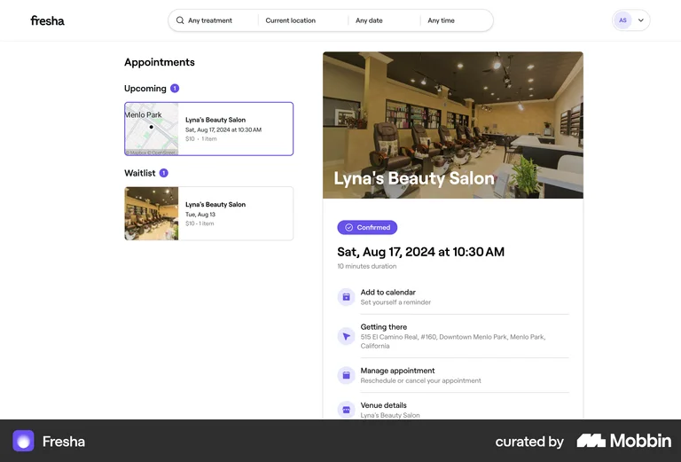
Pickup → Live → Drop as a track. No Finish button.
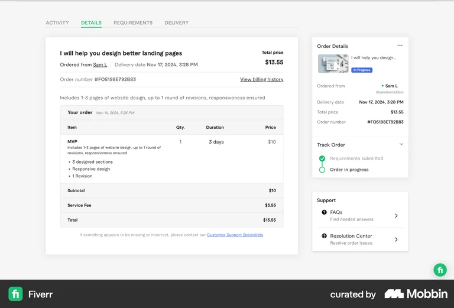
Times on Pickup and Dropoff. Skip the map.
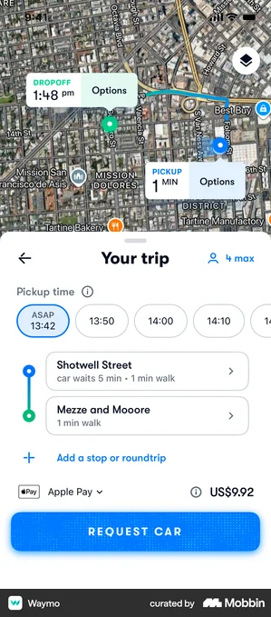
Time window on top. “Driver to be assigned” = reassign. Cancel on the page.
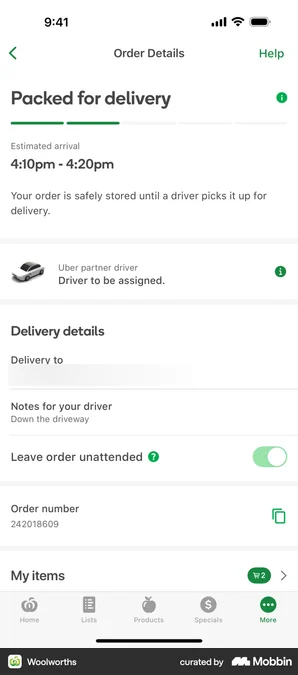
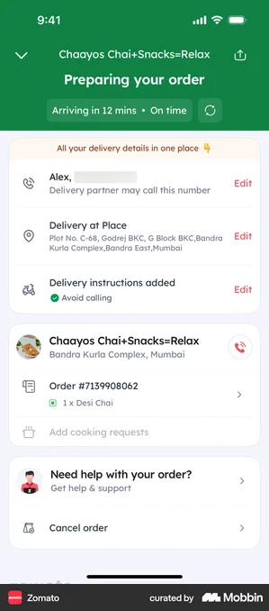
Rows + checkboxes. We group by pet.
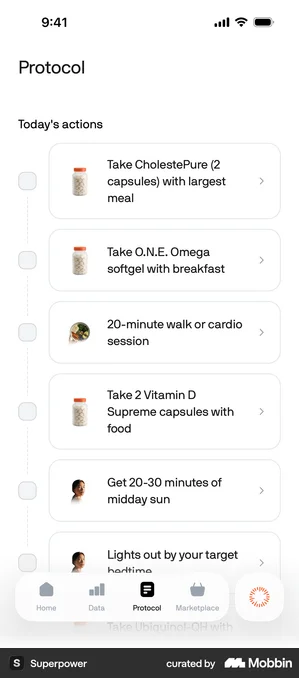
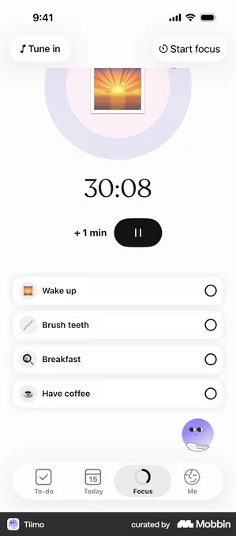